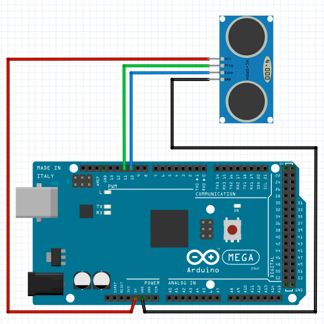

var ultrasonic1 = new UltrasonicRanger();
// set up an ultrasonic ranger
ultrasonic1.setup(
1, // unit 1
11, // pin 11 - trig (output)
10 // pin 10 - echo (input)
);
// measure the distance
ultrasonic1.whenGetValue = function(value) {
document.getElementById("status").innerHTML = "measured distance is " + value + " cm";
};
ultrasonic1.getValue();
Call function getValue() to measure the distance between the ultrasonic ranger and the object ahead.
The measured distance value in centimeters will be obtained in callback whenGetValue().
UltrasonicRanger
setup(unit, pin1, pin2)
initialize an ultrasonic ranger object with specified TRIG and ECHO pins (pin1 and pin2) on a specified unit.
return value: true if successful, otherwise false.
getValue()
request to measure the distance by ultrasonic ranging, an event callback whenGetValue() will be received later.
return value: the distance value in centimeters.
Return Value Note:
The function will return a value when your h5control program uses waitRsp mode, but no return value when uses nowaitRsp mode.
whenSetup(done)
receive the callback when setup done. parameter done is true if successful or false otherwise.
whenGetValue(value)
receive the callback to get the measured distance value after called function getValue().